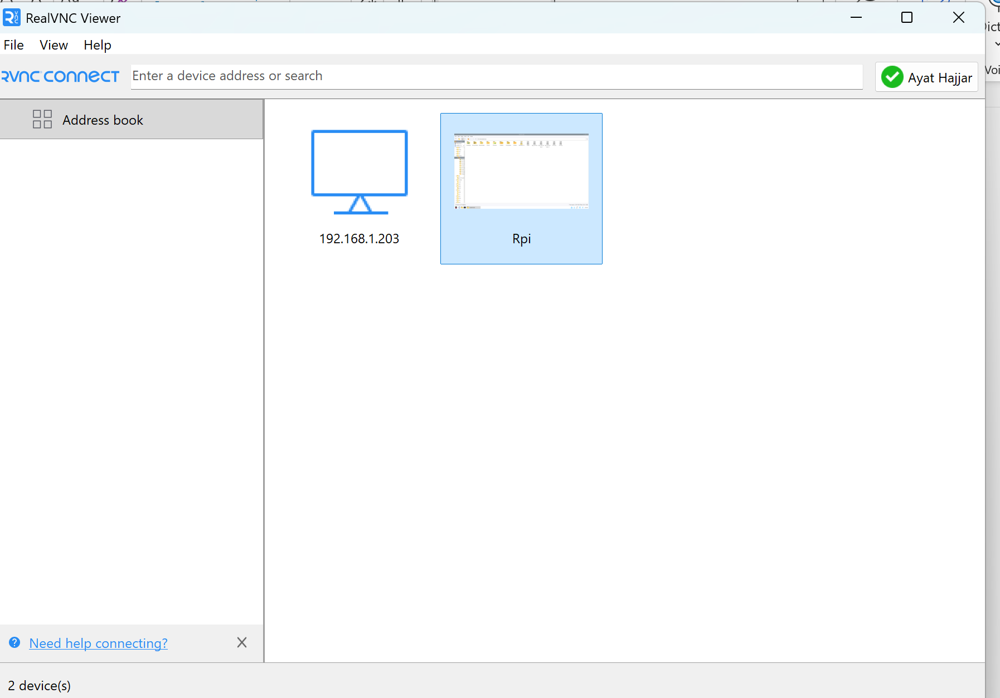
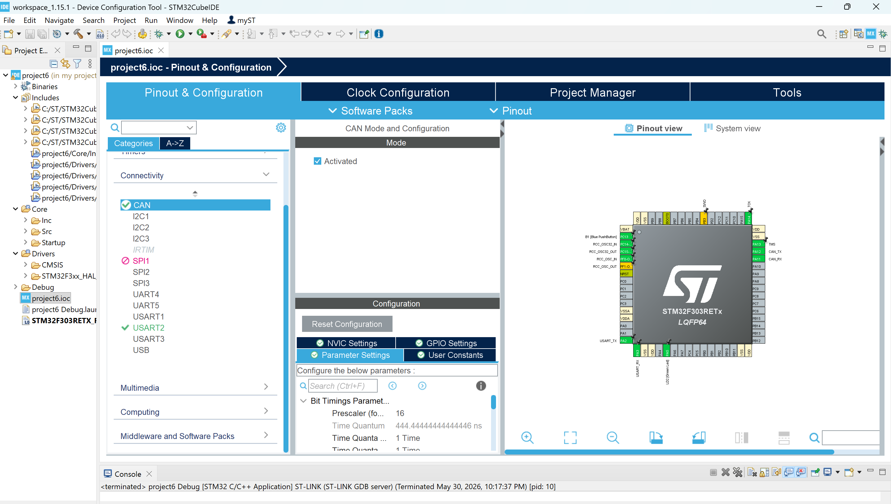
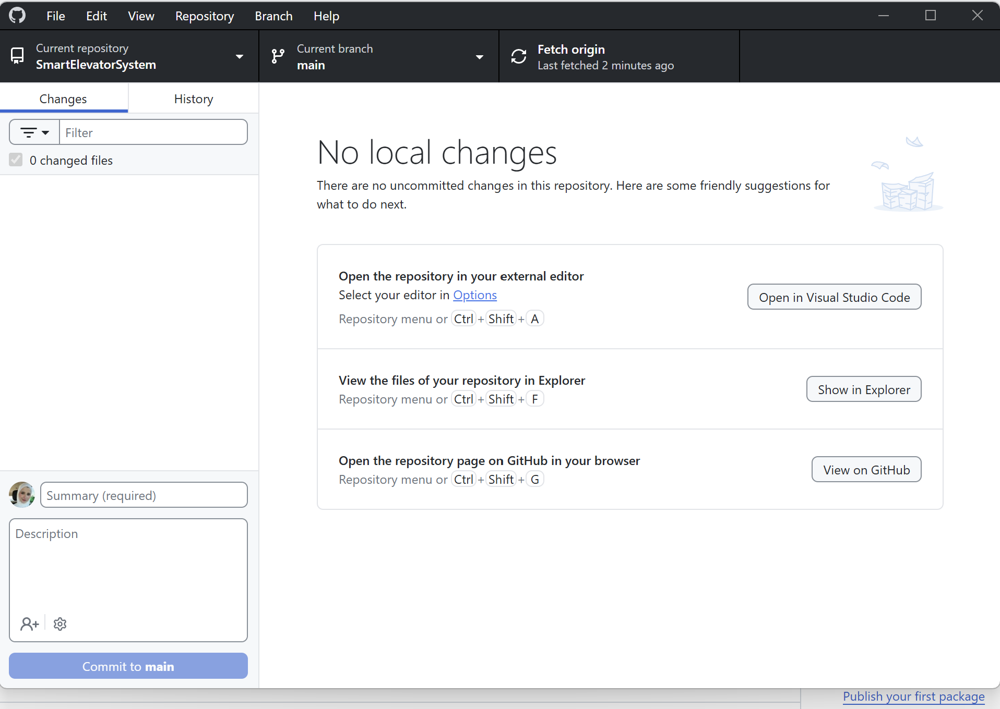

Weekly Log Book - Ayat Hajjar
My name is Ayat Hajjar. I am a student in the Software Engineering course. My role in this project is creating and maintaining the project website, developing web pages, and working on CAN coding and CAN communication protocol for Phase 1 of the Smart Elevator System project.
Age: 30
Week 1
- Created the home page.
- Tested the website using localhost.
Week 2
- Created the about page.
- Uploaded website files to GitHub.
Week 3
During Week 3, I worked on the First Deliverable for the Smart Elevator System project.
- Prepared the Raspberry Pi server environment.
- Verified network connectivity using RealVNC Viewer.
- Configured CAN communication in STM32CubeIDE.
- Studied the Common CAN Communication Protocol.
- Created and published the Smart Elevator System website using GitHub Pages.
- Developed the initial GUI concept for remote elevator monitoring.
- Prepared system test plans and engineering documentation.
- Participated in project planning meetings with team members.
Week 3 Evidence



Week 4
During Week 4, I continued working on the Smart Elevator System project. The main focus was CAN communication, Raspberry Pi web interface testing, and verifying that the elevator responds to remote floor requests.
- Configured and tested CAN communication between STM32 controllers.
- Verified CAN transmit and receive messages using Tera Term.
- Tested Floor 1, Floor 2, and Floor 3 request messages.
- Confirmed CAN IDs and data values matched the shared CAN protocol.
- Connected to the Raspberry Pi remotely using RealVNC Viewer.
- Tested the elevator web interface from the Raspberry Pi browser.
- Verified that the elevator moved to the requested floor.
- Updated the project website and log book documentation.
Week 4 Evidence


Result: The CAN communication was working successfully. The STM32 controller received floor request messages, and the Raspberry Pi web interface was able to communicate with the elevator system.